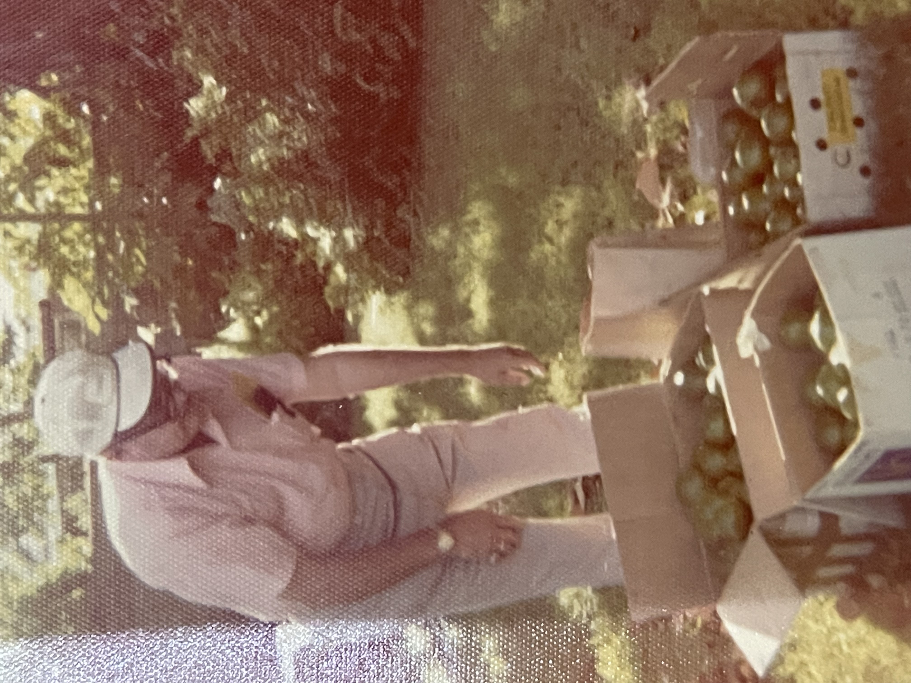
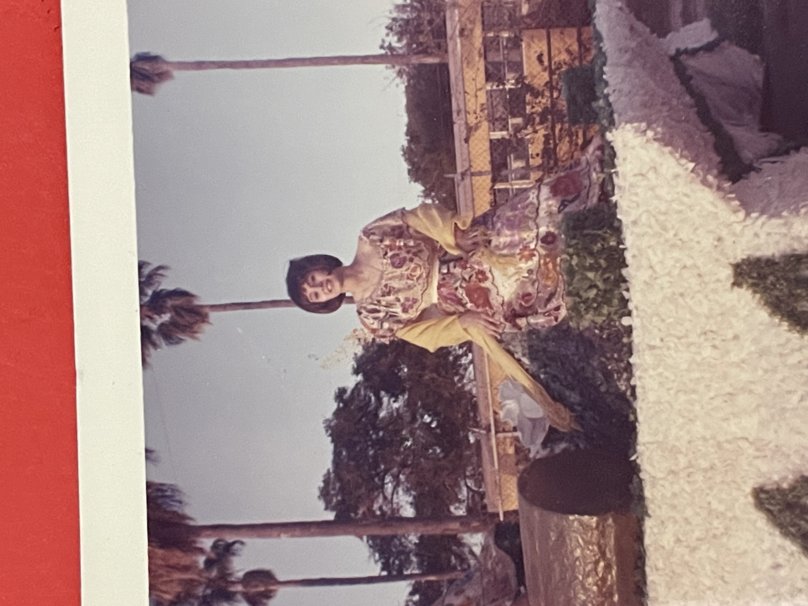
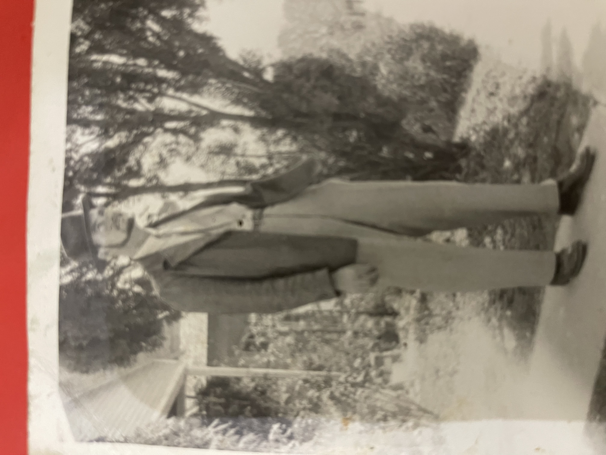
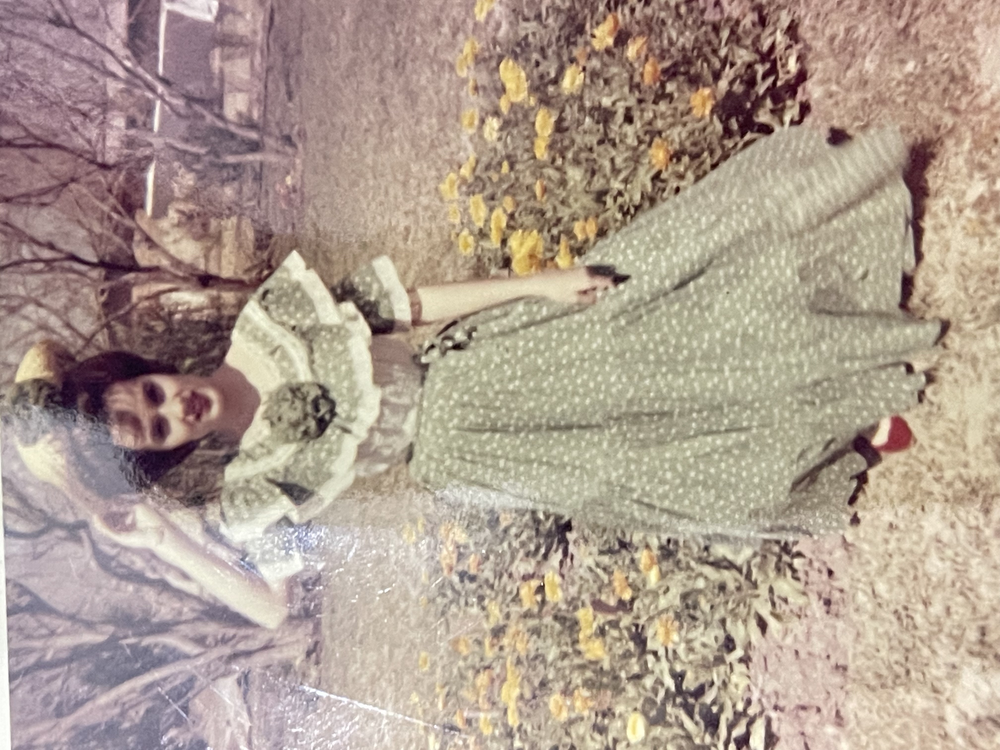
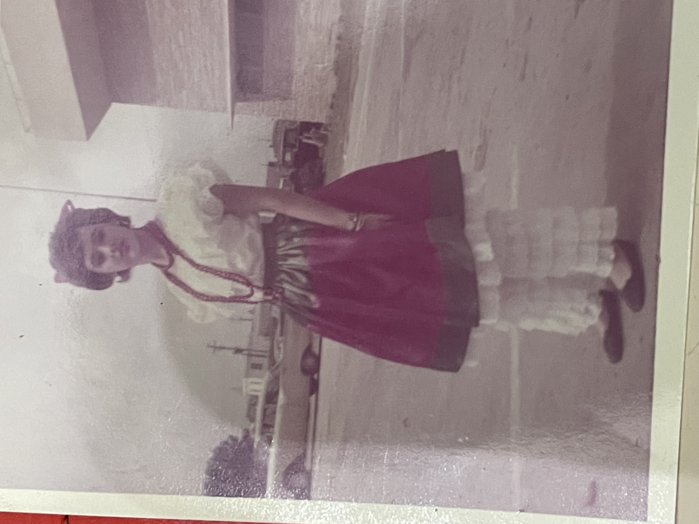
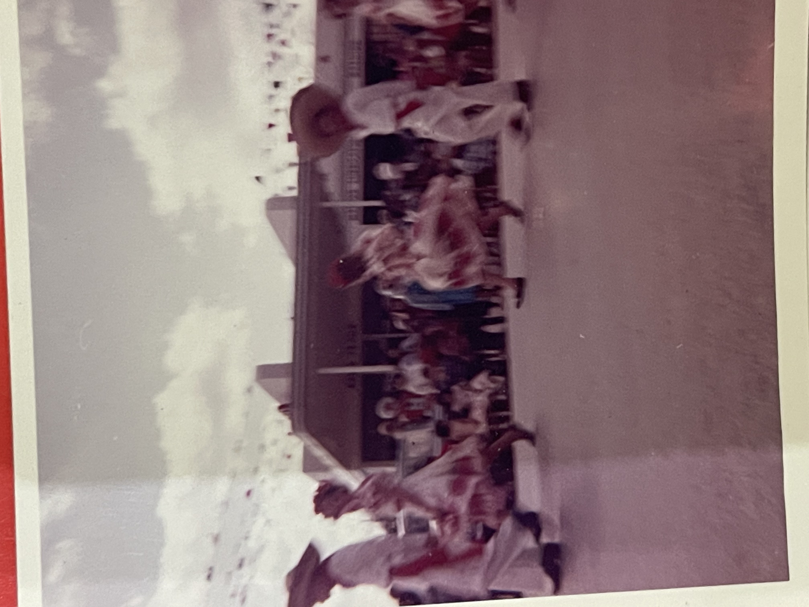
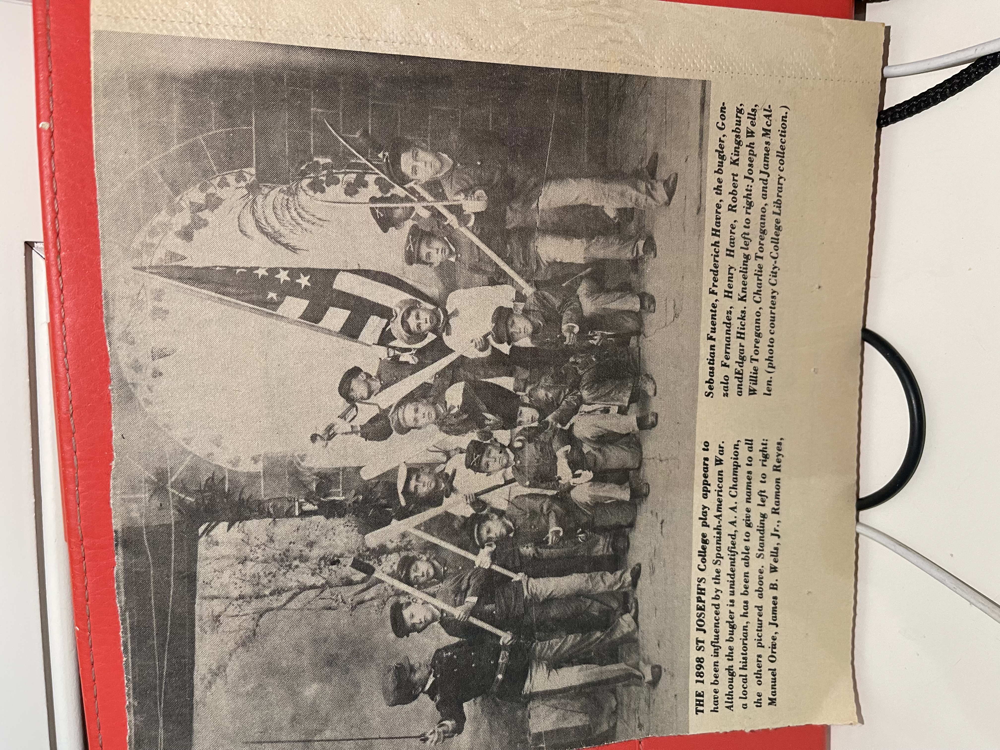

These photographs come from my family’s collections and from local
historical material. Together, they put faces, textures, and settings
to the stories my grandmother tells in the podcast. Rather than serving
as illustrations, they work as a small visual archive of how people in
Brownsville and the surrounding Valley lived with fruit trees, fiestas,
parades, beaches, and uniforms long before the contemporary border
became a national spectacle.
I have arranged the images to move between household scenes, public
celebrations, and older historical fragments. Each caption includes a
short reflection on how the photograph connects to the themes of
everyday competence, performance, and belonging that run through the
project.

1. Backyard Citrus, Brownsville
My great-grandfather stands over cardboard boxes filled with
avocados and limes, sorting through the fruit in the shade of a
backyard tree. The scene is completely ordinary: no parade, no
ceremony, just produce and grass and late-afternoon light.
This photo echoes the podcast’s emphasis on work and exchange at a
small scale. The citrus harvest represents a kind of everyday
surplus that moves through families, neighbors, and informal
markets. It matches my grandmother’s memories of people sharing
food and favors across town and across the river, keeping the
Valley livable through quiet forms of mutual support.
2. Charro Days Jail, Brownsville
My relatives pose in embroidered Charro Days outfits in front of
an old jail cell, part of the long tradition of locking up
“beardless men” during the festival. The image stages a playful
mix of carceral space and celebration: bright dresses and
decorative ribbons against rusted bars.
The picture captures how the border’s institutions are folded into
local ritual. Just as my grandmother recalls light-hearted
enforcement and small-town negotiations, this photograph turns
punishment into performance. It reinforces the project’s argument
that civic life in the Valley has often depended on people
repurposing official structures into shared traditions.
3. Henry Havre on Horseback
This older studio-style photograph shows my ancestor on horseback,
wearing a broad hat and pointing pistols while saddlebags hang
from the saddle. The background is a rural landscape, blurred and
bright, with the horse’s shadow stretching across the dirt.
The pose leans into the borderland cowboy mythology, but for my
family it is less about legend than about work and mobility. It
connects to my grandmother’s stories of ranches, shrimp boats, and
the last horse-mounted cavalry at Fort Brown, illustrating how
movement across land and water shaped both livelihood and identity
long before SpaceX and militarized checkpoints.

4. Charro Days Float, Brownsville
Here my grandmother sits on a Charro Days float, surrounded by
palm trees and late-afternoon sky. The float is covered in white
flowers, and her dress echoes the festival’s cross-border
aesthetic: Mexican-inspired embroidery and color framed by a
very South Texas streetscape.
The photograph lines up with her description of Charro Days as “a
really big deal” and the “only international parade in the United
States” at the time. It lends visual depth to the podcast’s
memories of shared celebration between Brownsville and Matamoros,
where performance, costume, and public space temporarily reframe
the border as a site of collaboration rather than division.
5. Boca Chica, Early Childhood
This image shows my grandmother as a young girl standing in the
surf at Boca Chica, balanced in a round float ring as waves roll
in behind her. The horizon is empty except for water and sky,
giving the beach an almost private feel.
In the podcast she remembers Boca Chica as a sparse family beach
full of camping trips, sand crabs, and shrimping boats. Placed
next to those stories, the photograph underlines the contrast
between that earlier coastline and the current SpaceX launch
complex. It makes tangible the shift from a local, family-scale
landscape to one oriented around global spectatorship and
speculative futures.

6. Oscar Henslee in Town
In this portrait, my great-grandfather stands on a sidewalk in
Brownsville wearing a hat, tie, and jacket. Behind him are trees,
a modest house, and a path that curves out of the frame. The
photograph is formal but not studio-staged; it feels like a pause
in the middle of motion.
The image complicates the standard border iconography of fences
and patrol vehicles. It shows a young man claiming his place in
town, dressed for work or church, long before the Valley became a
shorthand for national security. It resonates with my
grandmother’s emphasis on knowing every street and “feeling at
home everywhere,” mapping a quieter, more local civic presence.

7. Charro Days Dress, Garden Portrait
My grandmother stands in a yard full of marigold-colored flowers,
wearing a long green ruffled dress and holding a matching hat.
Trees without leaves frame the background, giving the image a
seasonal, almost theatrical feel.
This portrait captures Charro Days as a ritual of preparation and
display. It links to the project’s focus on costume and
performance in both family photos and Tommy Kha’s work. Like Kha’s
staged images, the picture asks how bodies and clothes signal
belonging to multiple cultural worlds at once.

8. Charro Days Dress, Street Scene
In a later photo, she wears a different Charro Days outfit: a
short skirt over layered ruffled pants, beads, and a large bow in
her hair. The backdrop is a parking lot and low commercial
buildings, with cars and telephone poles framing the horizon.
Here the festival spills into the everyday built environment. The
costume stands out against asphalt and cinderblock, much like
border celebrations stand out against the more bureaucratic and
militarized images of the region. The photograph underscores how
cultural performance depends on ordinary infrastructure: schools,
parking lots, and streets that become temporary stages.

9. Children’s Parade, Regional Dances
This blurred action shot shows elementary school students dancing
in the street during a parade, dresses and hats in motion as they
perform regional folkloric dances. Spectators line the sidewalk,
and a low building anchors the scene behind them.
The photograph extends my grandmother’s account of how children
were taught to move and perform as part of cross-border civic
life. It illustrates how regional identity is rehearsed from a
young age, not just in family stories but in public events that
train bodies to inhabit the street, the music, and the crowd
together.

10. St. Joseph’s College Play, 1898
This historical photograph shows boys in uniforms and sailor suits
posing with rifles and flags on a decorated stage. The caption
notes that the 1898 St. Joseph’s College play appears to have been
influenced by the Spanish–American War, and it lists the students’
names, including my ancestor Henry Havre.
Placed at the end of the archive, the image reveals how
performance, empire, and childhood have long intersected on the
border. Decades before my grandmother’s Charro Days outfits, local
children were already rehearsing national conflicts in school
productions. The photograph connects my family’s story to a longer
history of the Valley as a place where global politics are staged
in local bodies, reinforcing the project’s argument that border
life is shaped by performance as much as by policy.